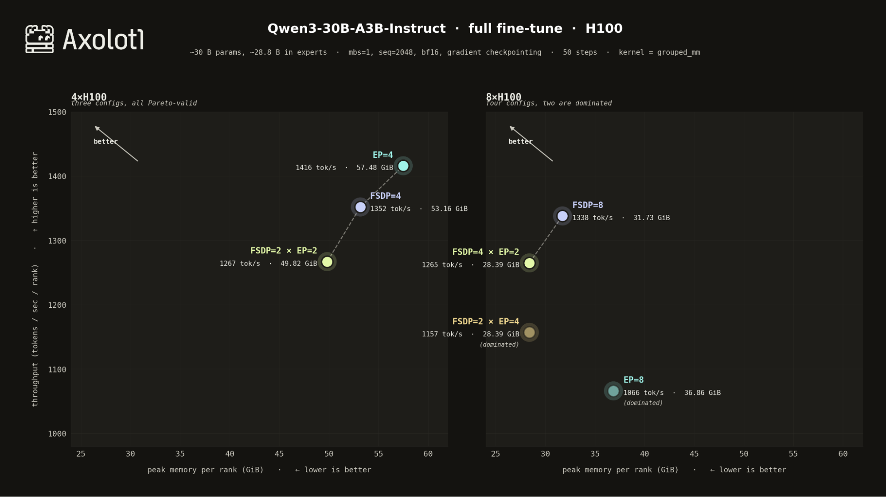
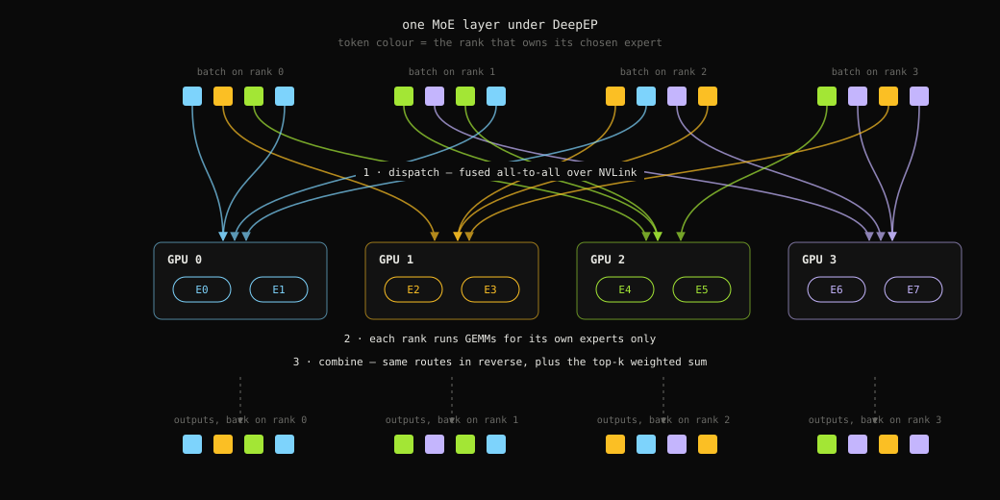
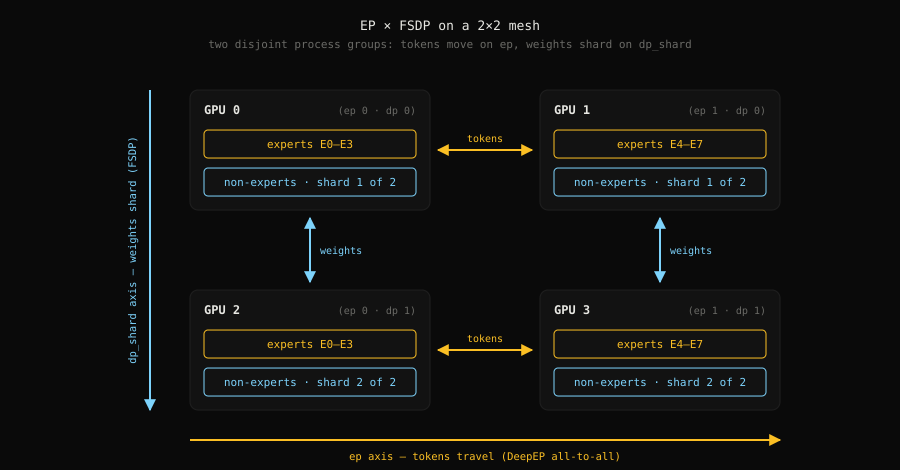

Expert Parallelism in Axolotl
This post walks through Axolotl’s new Expert Parallelism integration, built on DeepEP — DeepSeek’s fused communication library for MoE dispatch and combine.

Why do we care?
In fine-tuning, a good open model increasingly means a Mixture-of-Experts model. Most of an MoE’s parameters live in the experts, and experts create a very specific problem that dense models never had:
Your tokens are in the wrong place.
Each token gets routed to a handful of experts, and if those experts live on other GPUs, the tokens have to physically travel there, get processed, and travel back. This exchange is the all-to-all collective. If you want a beautiful deep dive into how all-to-all actually moves bytes through a cluster, go read Aleksa Gordić’s post on collective operations. We’ll stay one level up: how Axolotl now handles this for you.
- What Expert Parallelism buys you
- Turning it on (it’s three lines of YAML)
- Composing EP with your local MoE kernels
- ND parallelism: EP × FSDP × CP
§ 01What Expert Parallelism buys you
Before EP, your realistic option for a big MoE in Axolotl was FSDP: shard everything across all GPUs, all-gather parameters as you go. This works! But experts dominate the parameter count, and FSDP treats them like any other weight — so every forward pass all-gathers expert weights that most tokens will never even touch.
Expert Parallelism flips the logic:
Don’t move the experts to the tokens. Move the tokens to the experts.
With expert_parallel_size: N, each rank owns num_experts / N experts permanently. From there, every MoE layer is a three-step dance:

Two things make DeepEP specifically great here:
- The dispatch/combine kernels are fused and topology-aware — NVLink within a node, RDMA across nodes — rather than a generic
all_to_allcall plus a pile of index bookkeeping. - Each rank naturally sees a different batch. So EP is data-parallel with respect to your data, and model-parallel with respect to expert weights. You get both at once, on the same GPUs.
§ 02Turning it on
Here’s the whole thing:
plugins:
- axolotl.integrations.expert_parallel.ExpertParallelPlugin
expert_parallel_size: 2 # 1 = disabled (default)That’s it for pure EP. Under the hood, the plugin slices each Experts module’s gate_up_proj / down_proj along the experts dimension and swaps the dispatch/combine path for DeepEP.
A real 4-GPU config (full fine-tune of Qwen3-30B-A3B, EP × FSDP):
base_model: Qwen/Qwen3-30B-A3B-Instruct-2507
plugins:
- axolotl.integrations.expert_parallel.ExpertParallelPlugin
expert_parallel_size: 2
dp_shard_size: 2 # ep × dp_shard must equal world_size
fsdp_config:
fsdp_version: 2
auto_wrap_policy: TRANSFORMER_BASED_WRAP
transformer_layer_cls_to_wrap: Qwen3MoeDecoderLayer
state_dict_type: FULL_STATE_DICT
sharding_strategy: FULL_SHARD§ 03Composing EP with your local MoE kernels
Here’s the part we’re most happy with: EP doesn’t replace your expert compute, only the token movement. Whatever local experts kernel you already configured keeps doing the GEMMs — EP just wraps it in dispatch/combine:
| Your existing config | Local kernel under DeepEP |
|---|---|
use_scattermoe: true | ScatterMoE (Triton) |
use_sonicmoe: true | SonicMoE (bf16 experts) |
experts_implementation: grouped_mm / batched_mm | grouped_mm (transformers) |
experts_implementation: eager | eager Python loop |
| (unset) | grouped_mm (default) |
So use_scattermoe: true + expert_parallel_size: 2 gives you Triton-fused local expert GEMMs and DeepEP token routing, with zero extra config. The composition is registered internally as deep_ep_scattermoe — you can spot it in the logs.
Our recommendations right now:
- ScatterMoE is the battle-tested path: it runs on any CUDA GPU, composes with EP, and it’s what we’ve validated most heavily, including LoRA fused into the grouped GEMM.
- grouped_mm / eager are the reference transformers implementations; grouped_mm is the default and it’s solid.
§ 04ND parallelism: EP × FSDP × CP
Sharding experts is great, but the non-expert weights (attention, embeddings, router) still need a home, and long sequences still need splitting. This is where mesh axes come in.
The trick is that EP composes with FSDP on orthogonal mesh axes. Experts shard across the ep axis; non-expert params shard across dp_shard. The two sets of collectives run on completely disjoint process groups — the all-to-all for tokens and the all-gathers for FSDP never step on each other. Rows share weights, columns move tokens.

ep, weights shard on dp_shard.What’s supported today:
| Combination | Status | Notes |
|---|---|---|
| EP | ✓ | pure EP, experts sharded across all ranks |
| EP × dp_shard | ✓ | EP + FSDP2 on orthogonal axes |
| EP × cp | ✓ | sequence shards on cp (needs CP-aware attention, e.g. GLM DSA via the kernels plugin) |
| EP × cp × dp_shard | ✓ | all three at once |
| EP × tp | ✗ | not yet — raises NotImplementedError |